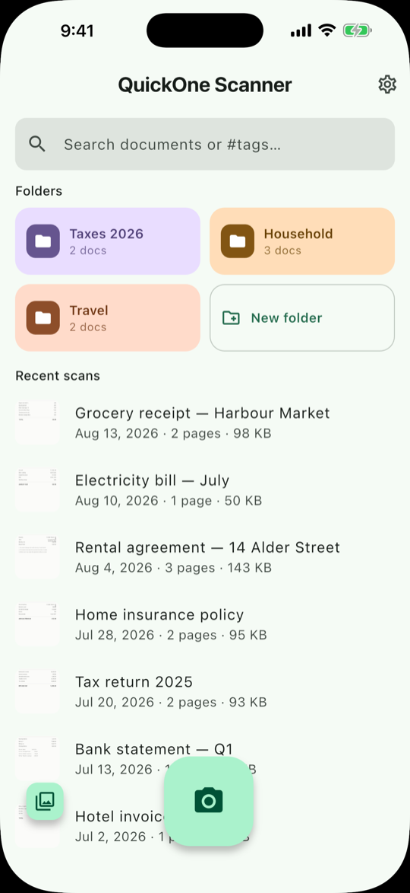
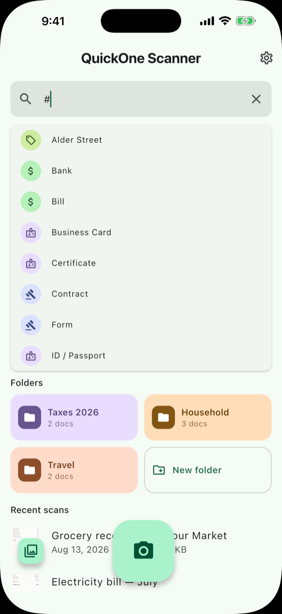
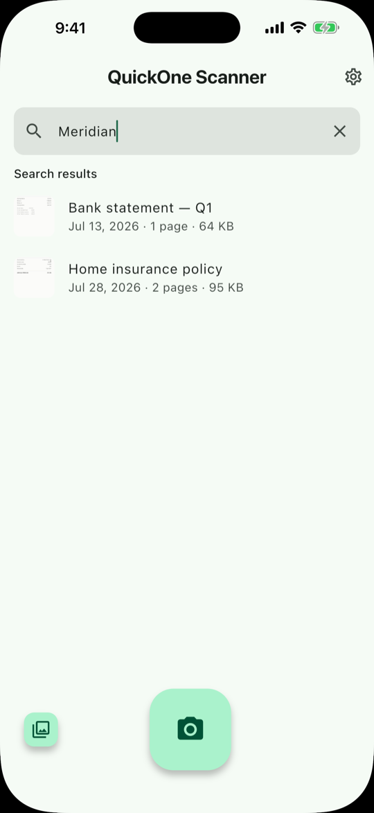
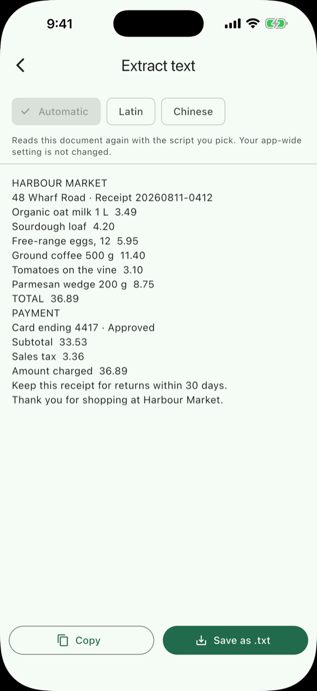
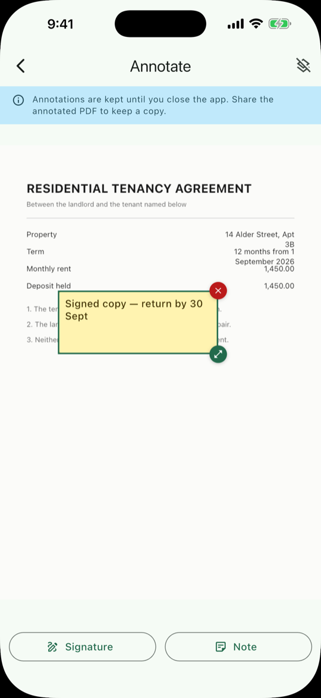
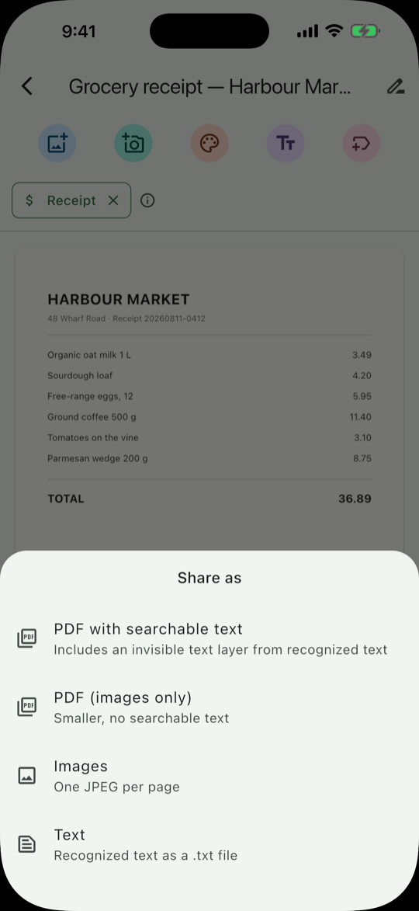

QuickOne Scanner · PDF & OCR
Your documents never leave your phone. QuickOne Scanner turns your camera into a document scanner that works entirely on your device — edge detection, image cleanup, text recognition and search all run locally. There is no account to create, no server to upload to, and nothing for anyone to leak.
Free means free, and private means private
Most scanner apps are a funnel. This one is not — here is exactly what that means, in specifics rather than adjectives.
| Claim | What it actually means |
|---|---|
| Everything on-device | Your scans, page images and recognized text stay in the app's private storage. We operate no server and receive nothing. |
| Genuinely free | No subscription, no one-time unlock, no scan allowance, no ads. Not “free for your first 5 scans” — free. |
| No watermark | Not on any export, not ever. |
| No account | No email, no phone number, no sign-in. |
| Minimal permissions | The camera is used only to scan a page. Photo import goes through the system picker, which needs no library access. |
Scan, read, find, organise, mark up, share
Six things the app does, and the detail inside each one.
Scan
- Automatic page detection — hold the phone over the page and the edges are found for you
- Multiple pages in one session, with retake and reorder
- Import photos you already have
- Add pages to an existing document whenever you like
- Reorder by dragging, crop any page, delete the ones you do not want
- Original, Grayscale and Black & white filters — always reversible, because the untouched original is never overwritten
Read
- On-device text recognition for Latin scripts and for Chinese, Simplified and Traditional
- The script is detected automatically; you can override it for one document or for the whole app
- Re-read your entire library with a different model at any time
- Copy the recognized text, or save it as a
.txtfile
Find
- Full-text search across document titles and every word the recognition read inside your pages
- Chinese is indexed character by character, so partial queries work
- Type
#to filter by tag, and combine tags to narrow further
Organise
- Tags that pick their own icon from what they mean — money, ID, health, legal, home
- Seventeen built-in tags, plus any you invent
- Automatic tag suggestions from the recognized text, worked out on your device — remove any that do not fit
- Folders, colour-coded from their names
Mark up
- Sign a page with your finger, in five ink colours
- Sticky notes with your own background and text colour, including a transparent background for a plain caption
- Drag, resize and place anything where you want it
- Export an annotated PDF that keeps your marks
Share and export
- PDF with an invisible searchable text layer, so other apps can search your scan
- PDF, images only, when the smallest file is what matters
- JPEG, one per page
- Plain
.txtof the recognized text - Export your whole library, a single folder, or everything under one tag as a ZIP you keep yourself
What it looks like
Six screens from the app on iPhone. Everything below happens on the device — none of these documents left the phone.

Your library
Everything starts here. Folders take their colour from their own names — Taxes 2026, Household, Travel — and Recent scans lists each document with its date, page count and file size, so you can see at a glance what is taking up room. The camera button starts a scan; the button beside it imports a photo you already have. The search field at the top is the same one that searches inside your pages.

# and every tag appears, each with the icon it chose.#
Tags, and how to filter by them
Type # into the search field and the full tag list drops down —
Bank, Bill, Business Card, Certificate, Contract, Form, ID / Passport and the rest.
Pick one to filter, or combine several to narrow further.
Notice the icons: each tag picks its own from what it means, so money tags get a currency mark and identity tags get an ID card. That includes tags you invent — “Alder Street” at the top is a custom one. Seventeen are built in.

Search inside your pages
This is the part that makes a scanner worth keeping. Searching “Meridian” returns a bank statement and an insurance policy — and the word is in neither title. It was read out of the page images by the on-device text recognition and indexed there.
Chinese is indexed character by character, so partial queries work the way you would expect them to.

Read the text back
The recognized text of a scan, in full — here a grocery receipt, line items, totals and all. Copy takes it to the clipboard; Save as .txt writes it to a file.
The Automatic / Latin / Chinese row at the top re-reads this document with the script you pick, without changing your app-wide setting — useful when a page is mixed, or when automatic detection guessed wrong. You can also re-read your entire library with a different model from Settings.

Sign it, or leave yourself a note
Signature opens a pad you sign with your finger, in five ink colours. Note drops a sticky note you can drag, resize and recolour — background and text both, including a transparent background when you just want a caption.
Read the blue banner, because it matters: annotations are kept until you close the app. They are a markup layer for sharing, not a saved edit — share the annotated PDF to keep a copy of them.

Getting it out again
PDF with searchable text is the default and usually the one you want: it carries an invisible text layer, so Preview, Acrobat, your mail client and your cloud drive can all search inside the scan. PDF (images only) drops that layer when file size matters more.
Images gives you one JPEG per page, and Text the recognized text as
a .txt file. From Settings you can also export your whole library, a single folder, or
everything under one tag as a ZIP. No watermark on any of it, ever.
The same app, with two honest differences
The features are identical. What differs is which system component provides the camera, and what that implies for permissions.
| iPhone & iPad | Android | |
|---|---|---|
| Capture screen | Apple VisionKit, which ships with iOS — nothing downloads | Google Play services, which downloads it on your first scan |
| Camera permission | Asked once, the first time you scan, because VisionKit runs inside the app | Never asked — capture happens inside Play services under its own permission |
| Text recognition | Both models bundled in the app — offline from the first scan | Both models bundled in the app — offline from the first scan |
| Network requests | None at all | One, for the capture component, on first scan only |
| Minimum version | iOS 15.5 | Android 7.0 |
| Interface languages | English, Français, Español, 简体中文, 繁體中文 · Light, dark, or follow the system | |
One thing worth knowing. Because nothing is uploaded, your scans exist only on that device. If you lose it or reset it, they are gone with it — we cannot restore them, because we never had them. Settings → Export library as ZIP keeps a copy wherever you choose.
Frequently asked questions
Is QuickOne Scanner really free?
Yes. No subscription, no one-time unlock, no scan allowance, no ads and no watermark on any export. Not “free for your first 5 scans” — free. There are no in-app purchases at all, on either platform, so the app never handles payment information and no payment processor is involved.
Are my scanned documents uploaded to a server?
No. Edge detection, image cleanup, text recognition, the search index and the tag suggestions all run locally on your device. Your scans, page images and recognized text stay in the app's private storage, where other apps cannot read them. iDataGear operates no server for this app and receives nothing — not your documents, not your images, not the text recognized from them. The only time a copy leaves the device is when you use Share or Export and choose where it goes yourself.
Does the OCR work offline?
Yes, from the very first scan. Both text-recognition models — Latin and Chinese — are compiled into the app itself, so nothing downloads and OCR works on a device that has never been online. On iPhone and iPad the capture screen is Apple's own VisionKit document camera, which ships with iOS, so scanning is offline from the first launch too. On Android the capture screen comes from Google Play services and downloads once on first use; after that, scanning is offline as well.
Which languages can QuickOne Scanner read?
Text recognition covers Latin scripts — English, French, Spanish, German, Italian, Portuguese and the other languages written in the Latin alphabet — and Chinese in both Simplified and Traditional. The script is detected automatically, and you can override it for a single document or for the whole app. You can also re-read your entire existing library with a different model at any time. The app's own interface is available in English, Français, Español, 简体中文 and 繁體中文.
What is a searchable PDF and why does it matter?
A searchable PDF carries an invisible layer of text positioned behind the page image. The page still looks exactly like your scan, but other apps — Preview, Acrobat, your email client, your cloud drive — can search inside it, select text from it, and index it. QuickOne Scanner exports this by default. If you would rather have the smallest possible file, it can also export an images-only PDF.
Does QuickOne Scanner need camera or photo permissions?
On iPhone and iPad the app asks for camera access the first time you scan, because VisionKit runs inside the app — and that is the only prompt it shows. It requests no photo-library access (importing a photo goes through the system picker, which hands over only the file you chose), no location, no contacts, no microphone, and it shows no App Tracking Transparency prompt because it does not track you. On Android it does not even request camera permission, because capture happens inside Google Play services under its own permission.
What happens to my scans if I lose my phone?
They are gone with it. This is the honest trade-off of a scanner that uploads nothing: there is no cloud backup, and we cannot restore your documents because we never had them. Use Settings → Export library as ZIP to keep your own copy wherever you choose — a Mac, an external drive, or a cloud service you already trust.
Where can I download QuickOne Scanner?
On iPhone and iPad, from the App Store — it requires iOS 15.5 or later. On Android, from Google Play. Both are free.
Scan something. Nothing leaves your phone.
Free on the App Store and Google Play. No account, no ads, no scan limit, no watermark.